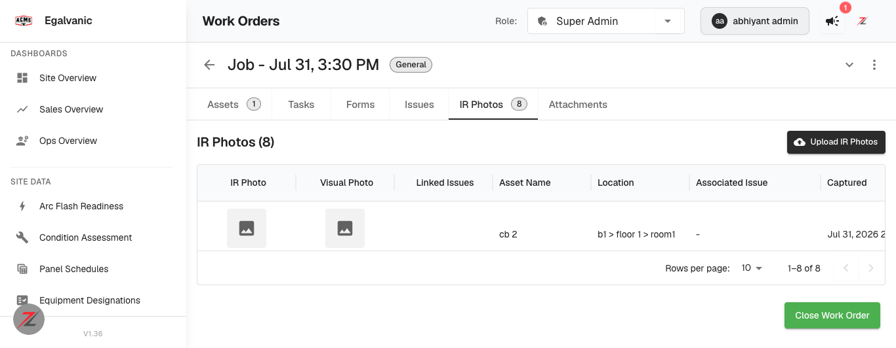
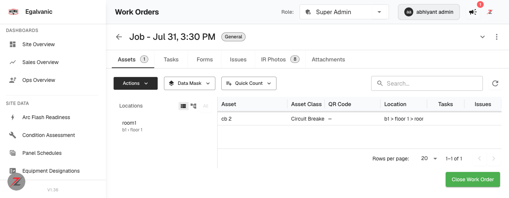
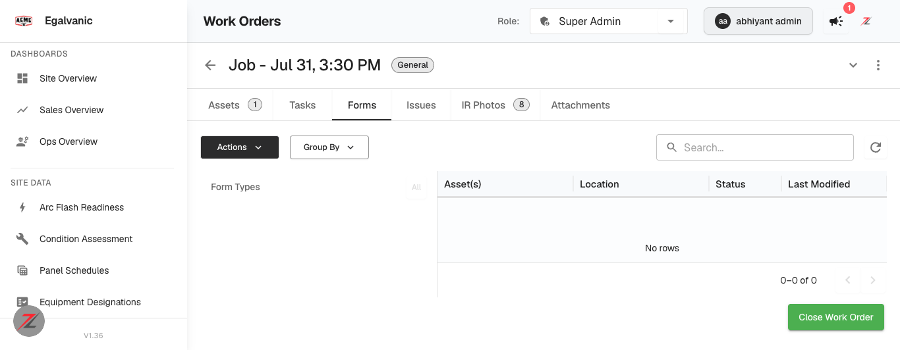

Ticket: “[Web] Work Order Details — Paginate all content sections (Assets, Issues, Tasks, Photos, Attachments)” · Environment: QA acme.qa.egalvanic.ai (app badge V1.36) · Page verified: /sessions/{id} (Work Order Details) · Verified: 2026-07-31, authenticated Super-Admin session
| Section | Endpoint actually called | Page size | Pagination UI | Total count shown | Verdict |
|---|---|---|---|---|---|
| Assets | GET /ir_session/{id}/assets/v2?limit=20&offset=0 | 20 | Rows-per-page + range footer | Tab badge “Assets 1” | PAGINATED |
| Tasks | GET /ir_session/{id}/tasks/v2?limit=20&offset=0 | 20 | Rows-per-page + range footer | Tab badge | PAGINATED |
| Issues | GET /ir_session/{id}/issues/v2?limit=20&offset=0 | 20 | Rows-per-page + range footer | Tab badge | PAGINATED |
| IR Photos | GET /ir_session/{id}/photos/v2?limit=25&offset=0 | 25 | Rows-per-page (10/25/50) + “1–8 of 8” | Badge “8” + heading “IR Photos (8)” | PAGINATED |
| Attachments | GET /ir_session/{id}/attachments/v2?limit=25&offset=0 | 25 | Rows-per-page + range footer | Tab badge | PAGINATED |
| Forms | GET /eg-form-instance/by-session/{id} — no params | — | grid footer only (client-side, “0–0 of 0”) | no badge | NOT SERVER-PAGINATED |
Each section fetches lazily on tab activation (verified by
diffing performance.getEntriesByType('resource') before/after each tab click) — so opening a work order no longer
downloads every section's rows up front. Additionally a GET /ir_session/{id}/summary/v2 supplies the per-section
totals (counts: {assets, issues, tasks, photos, attachments, asset_nodes}) without fetching rows.
Two independent checks — this is the distinction the ticket asks for (“Backend APIs support limit/offset … for each section”):
| Check | Observation |
|---|---|
| Changing “Rows per page” issues a NEW request | Setting IR Photos to 10 → fresh call photos/v2?limit=10&offset=0 (a client-side grid would re-slice in memory with no network call). |
| Distinct offsets return distinct records + metadata | photos/v2?limit=3&offset=0 → 3 rows, first id d4acb762…, pagination {limit:3, offset:0, total:8, has_more:true} photos/v2?limit=3&offset=3 → 3 rows, first id e62f6926…, pagination {limit:3, offset:3, total:8, has_more:true} |
| Criterion | Status |
|---|---|
| Each section loads a reasonable page size (e.g. 20–25) with pagination controls or infinite scroll | MET — 20 (Assets/Tasks/Issues), 25 (Photos/Attachments) |
| Backend APIs support limit/offset or cursor pagination for each section | MET — limit/offset + total/has_more; Forms excepted |
| Page load time significantly improved for work orders with 50+ items | NOT VOLUME-TESTED — mechanism verified; QA tenant has no 50+ item work order (largest available: 8 photos). Needs seeded data or a Prod-scale WO to measure. |
| Total count displayed per section (e.g. “Assets (147)”) | MET — tab badges + section heading “IR Photos (8)” |



pagination object (confirmed by re-requesting with
?limit=1&offset=0 — the parameters are ignored). The grid does show a footer (“0–0 of 0” here,
since this work order has no forms), but that is client-side paging over a fully-downloaded array — the server always
returns every form instance.
Low impact today (form instances per work order are few), but it is the one section still matching the ticket's original
“loads all records at once” description, and is covered by the ticket's “Any other sub-sections (Forms, Connections, etc.)”.limit/offset.Method. A real work order was opened at /sessions/b6bcc81d-… and each of the six tabs activated in turn; the API calls attributable to each tab were isolated by diffing the browser's resource-timing buffer around every click. Server-side behaviour was then confirmed directly against the API from the same authenticated session. Note: the repo's frontend reference clone (snapshot of developer @ d168200, 30 May 2026) still shows the pre-fix single /full load-everything pattern and no /v2 endpoints — that clone is stale; all findings above are from the live QA build.